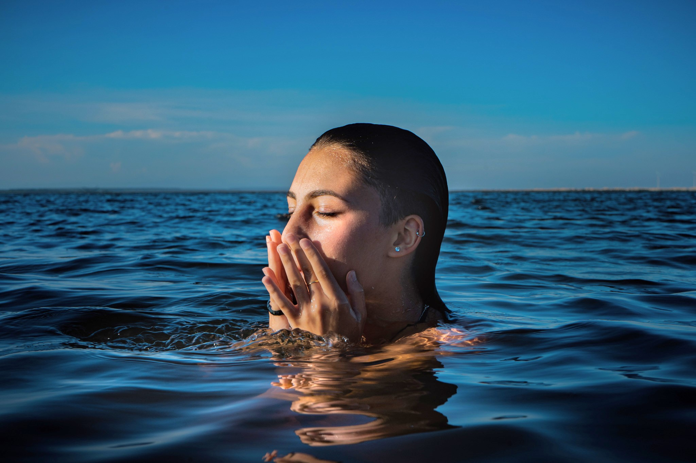
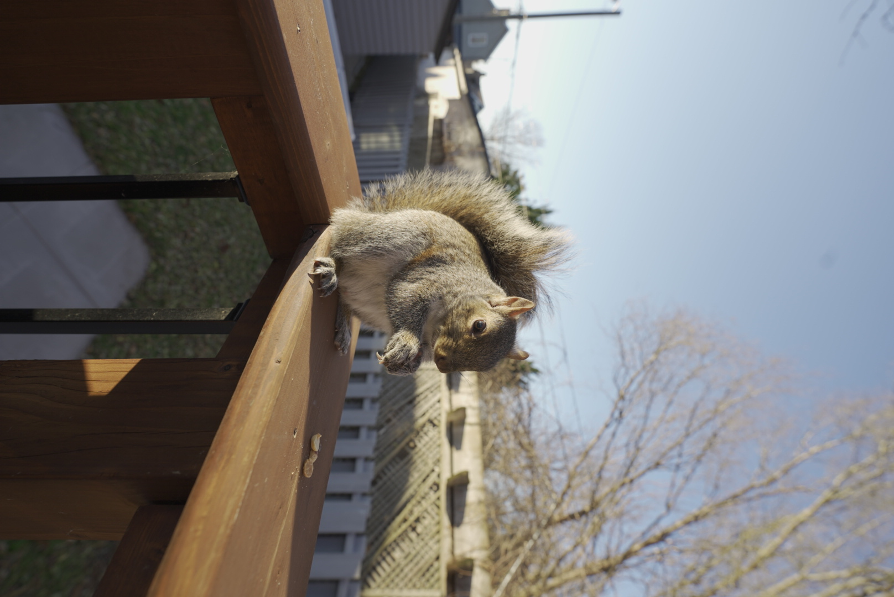

"Ana Luisa"
Photo taken at Cidreira, Brazil. Accompanied by my stepfather, my mom and two friends, Erico and Ana Luisa. We decided to stop by a Lake and have some snacks. Ana Luisa was shy and did not want to take pictures but I took this beautiful spontaneous shot while she was cleaning her face and she loved it.
"Reflections"

One of my most important pictures since it was the first professional picture I took. It was for a small project from a group of artists in Toronto.
"Cybermom"

The name "Cybermom" is auto explanatory, it has the cyberpunk look and... the person in the picture is my mom! Taken in Toronto, during a visit to a light event that happened at night.
"Mary Fantasy"

Photo taken at Casa Loma, Toronto, Canada, with my mexican friend, Maria Fernanda.
"6Toes"

The name "6Toes" is not only because the cat's name is Six Toes but also because the CAT HAS SIX TOES!!! YES! SIX... TOES. And I also like the way it is written with the number 6 instead of writing "six" because the CN Tower is in the back of the picture and Toronto is also known by “The 6”.
"Cocobolo"

This is my girlfriend! This picture was taken at my grandparents farm, lovely and special person at a lovely and special place. Named this picture Cocobolo because it is a name of a rare wood.
"Grey"
Grey, the squirrel. This photo is special to me not because of the beauty of the picture per se. But because of the emotion that I feel seeing it. My mom was going through hard times and this squirrel made her very happy back then.